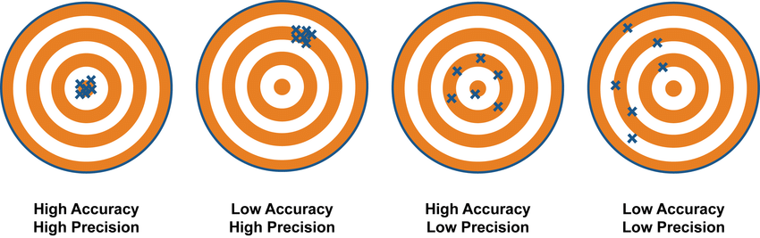
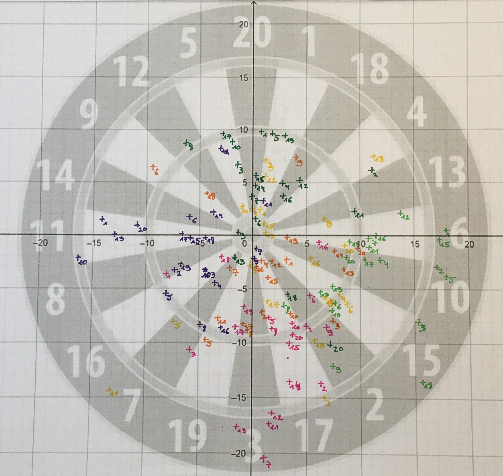
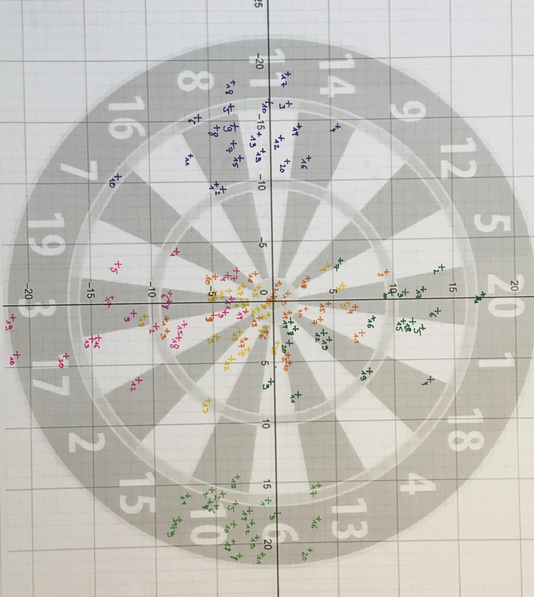
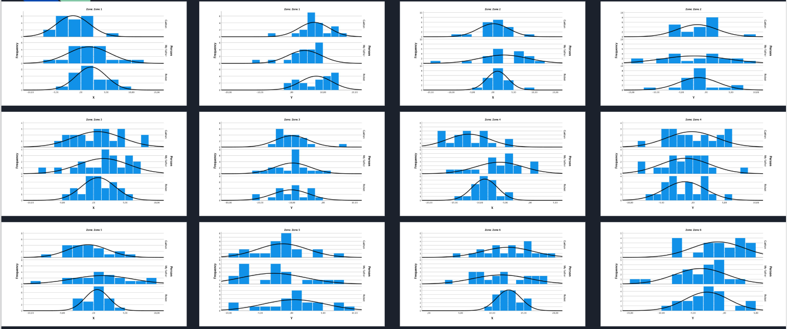
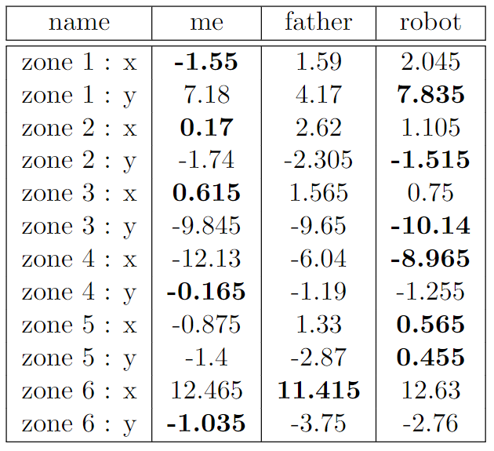

Statistics
Last year I have been working on an automated darts robot. Originally this was a school
project, however I also wanted to use it to participate in science fairs and contests.
But first let’s focus on the statistics behind the robot. The idea was to build a robot better than my family. To investigated it, I made a statistical analysis of the robot when it was in its fifth generation. More information about it: https://getgetstechno.github.io/ThunderCode.io/DRprototypeV.html
So back then there was no python app to help me calibrate the robot. The sensors were also not so accurate, and the software was not that good. But still, we can see some interesting things.
For this statistical analysis I will compare my father, the robot and me by looking at the accuracy and precision of multiple shots.
Precision and accuracy are in many fields used in the wrong way. Because my analysis focuses on these two different things, I think it’s important to explain the exact difference between them. Precision refers to the closeness the data is from each other. Let’s take our example of the dart board. If we shoot multiple times really close to each other, then we can say that our shots are precise. Accuracy refers to the closeness of the data from the true value. Let’s say we play darts multiple times and for each throw we try to shoot in the center. If the data is close to the center, then we can say that our shots are accurate.
For precision, we compare our data from the other data of the same experiment. While in accuracy we compare our data to the main objective our data was meant to have. (Professor Dave Explains, youtube)
The experiment I decided to do to compare my father, the robot and me was to shoot 120 times in series of 20. For every shot we will alternate from target. These will be in order: (0, 10), (0, 0), (0, -10), (-10, 0), (0, 0) and (10, 0). (For the robot I asked to shoot in (-15, 0) and (15, 0) instead of (-10, 0) and (10, 0). Therefore, I will translate all values for 5 centimeters. Normally this won’t have any consequences.
The reason why I chose 6 zones is because the robot then needs to position itself to a new position for each new throw.
 I decided to make box plots and normal distributions of all these shots.
How smaller the box plot and normal distribution, how precise and so how
better it is.
I decided to make box plots and normal distributions of all these shots.
How smaller the box plot and normal distribution, how precise and so how
better it is.


From these graphs, we can conclude that the robot is the most precise between our three. We can also see that I am more precise than my father. About the accuracy, we can compare the means. How closer the mean is from the target, how better. From the following table we can see that the robot and me are the closest from the target in respectively 6 and 5 of the 12 cases. This means both are even as accurate.
Overall, we can see that the robot is more accurate in the horizontal rather than vertical directionally. This can be explained because the path the darts follow if we’re looking from above is just a constant f(x) = C. However, if we look from above when a human is playing then the path is more a f(x) = ax + b, which is more complex and so more difficult to shoot right. If we look at the path from the side, then we can see that for both human and robot the curve is a parabola f(x) = ax2 + bx + c. Here we can also see that I am more accurate than the robot.
All these conclusions must be taken with a grain of salt because my conclusions are based on 120 shots, to improve their significance, a larger number of shots must be analyzed. Another important factor is that this experiment was executed in March.
The robot has since been upgraded significantly. The shots are more precise, and the python app make the robot (= see : https://getgetstechno.github.io/ThunderCode.io/DRprototypeVI.html) more accurate. So, the robot is better than my father and me.
But first let’s focus on the statistics behind the robot. The idea was to build a robot better than my family. To investigated it, I made a statistical analysis of the robot when it was in its fifth generation. More information about it: https://getgetstechno.github.io/ThunderCode.io/DRprototypeV.html
So back then there was no python app to help me calibrate the robot. The sensors were also not so accurate, and the software was not that good. But still, we can see some interesting things.
For this statistical analysis I will compare my father, the robot and me by looking at the accuracy and precision of multiple shots.
Precision and accuracy are in many fields used in the wrong way. Because my analysis focuses on these two different things, I think it’s important to explain the exact difference between them. Precision refers to the closeness the data is from each other. Let’s take our example of the dart board. If we shoot multiple times really close to each other, then we can say that our shots are precise. Accuracy refers to the closeness of the data from the true value. Let’s say we play darts multiple times and for each throw we try to shoot in the center. If the data is close to the center, then we can say that our shots are accurate.
For precision, we compare our data from the other data of the same experiment. While in accuracy we compare our data to the main objective our data was meant to have. (Professor Dave Explains, youtube)

The experiment I decided to do to compare my father, the robot and me was to shoot 120 times in series of 20. For every shot we will alternate from target. These will be in order: (0, 10), (0, 0), (0, -10), (-10, 0), (0, 0) and (10, 0). (For the robot I asked to shoot in (-15, 0) and (15, 0) instead of (-10, 0) and (10, 0). Therefore, I will translate all values for 5 centimeters. Normally this won’t have any consequences.
The reason why I chose 6 zones is because the robot then needs to position itself to a new position for each new throw.



From these graphs, we can conclude that the robot is the most precise between our three. We can also see that I am more precise than my father. About the accuracy, we can compare the means. How closer the mean is from the target, how better. From the following table we can see that the robot and me are the closest from the target in respectively 6 and 5 of the 12 cases. This means both are even as accurate.

Overall, we can see that the robot is more accurate in the horizontal rather than vertical directionally. This can be explained because the path the darts follow if we’re looking from above is just a constant f(x) = C. However, if we look from above when a human is playing then the path is more a f(x) = ax + b, which is more complex and so more difficult to shoot right. If we look at the path from the side, then we can see that for both human and robot the curve is a parabola f(x) = ax2 + bx + c. Here we can also see that I am more accurate than the robot.
All these conclusions must be taken with a grain of salt because my conclusions are based on 120 shots, to improve their significance, a larger number of shots must be analyzed. Another important factor is that this experiment was executed in March.
The robot has since been upgraded significantly. The shots are more precise, and the python app make the robot (= see : https://getgetstechno.github.io/ThunderCode.io/DRprototypeVI.html) more accurate. So, the robot is better than my father and me.
REFLECTION:
During this project I learned several things. The nature of trial and error tells me there will never be an end
to this project. The robot can always be improved. This project is not really useful. It won’t change the world
but at least I learned a lot of things related to engineering. First, the difference between theory and practice.
In theory you can calculate the exact forces and energy needed to shoot the dart. However, friction and the fact
that I am using Lego and cheap motors makes the theory impossible to use. I need other elastics and way more
powerful motors for example. I also learned to be patient. When something is not working, you can sometimes
search for hours and start all from the beginning to finally discover that one wire was just not connected.
Another thing is that on internet you can find lot of information related to Arduino and mechanics. That’s very
nice but the problem is that you only learn one aspect at a time. You can find tutorials for stepper motors and
for sensors but it’s hard to find tutorials that bundle all this together to make for example a working robot.
AWARDS:
With my project I decided to participate to several science fairs and contest. The first one was coolest project
organized by CoderDojo Belgium. There I won the prize for best engineering project. Then I decided to participate
too the maker faire Gent. There was nothing to win as always it is nice to present and “teach” other people about
your project. After, I participated to the Belgian Science Expo. I won two main prices, the first one was to be able
to participate to the European Science Expo in Romania. And the other one was to participate to EUCYS 2022, the European
Contest for Young Scientist. The European science expo was not a contest, but it was great to present and exchange
ideas with other scientists who won in their own nation. EUCYS 2022 was a high-level science contest. I didn’t
expect anything because other people had project on PhD level and mine had no real purpose at all. But unexpectedly
I won the third prize. More information on:
https://eucysleiden2022.eu/automated-darts-robot/